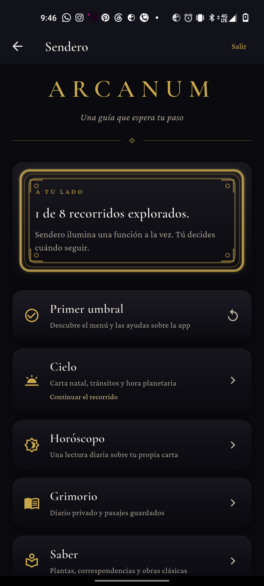
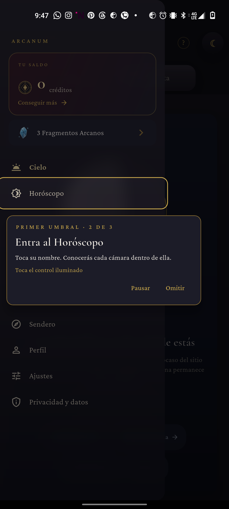
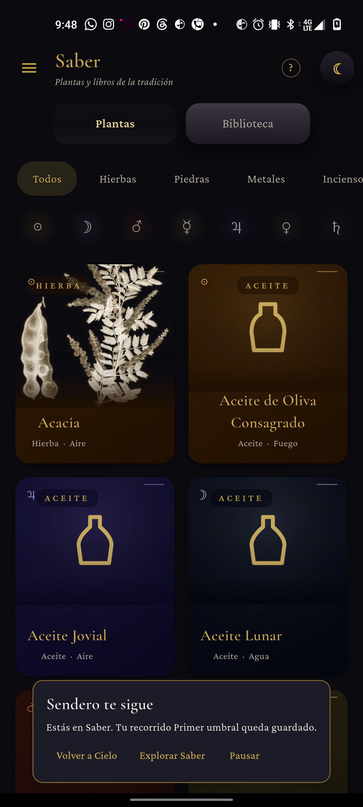
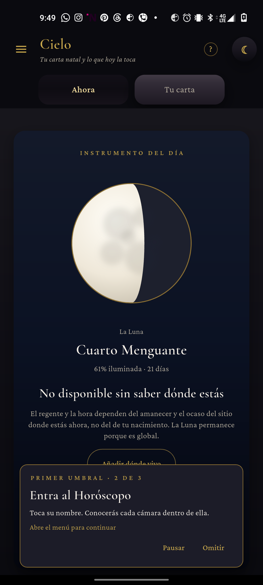

ARCANUM / Sendero / 02 oct 2026
Dos correcciones, vistas en el teléfono
Recorrido real en GN2200, Android 12. APK debug compilado desde release/1.0.6 con el cambio 6fb2ea1 e instalado sobre la app sin borrar datos.
Resultado: el texto del índice ya no queda cruzado por el marco. En Saber aparecen «Volver a Cielo», «Explorar Saber» y «Pausar»; volver conserva el paso 2/3. Pero el cartel del paso 2/3 tapa la fila Saber del cajón: llegar al desvío exigió tocar su estrecho borde izquierdo. Ninguna lección se completó.




Fragmentos3 antes y después
Créditos0 antes y después
Instalación
adb install -r; datos conservadosAPKSHA-256
D4410CB1…626Pendiente funcional: despejar el cajón durante el paso 2/3 para que explorar otra sección sea una opción real. No cubierto aquí: nueva recompensa de 1 Fragmento, precarga natal con datos consentidos, lector de pantalla, texto grande ni otro dispositivo. No se gastaron créditos ni se repitió una lección con premio.